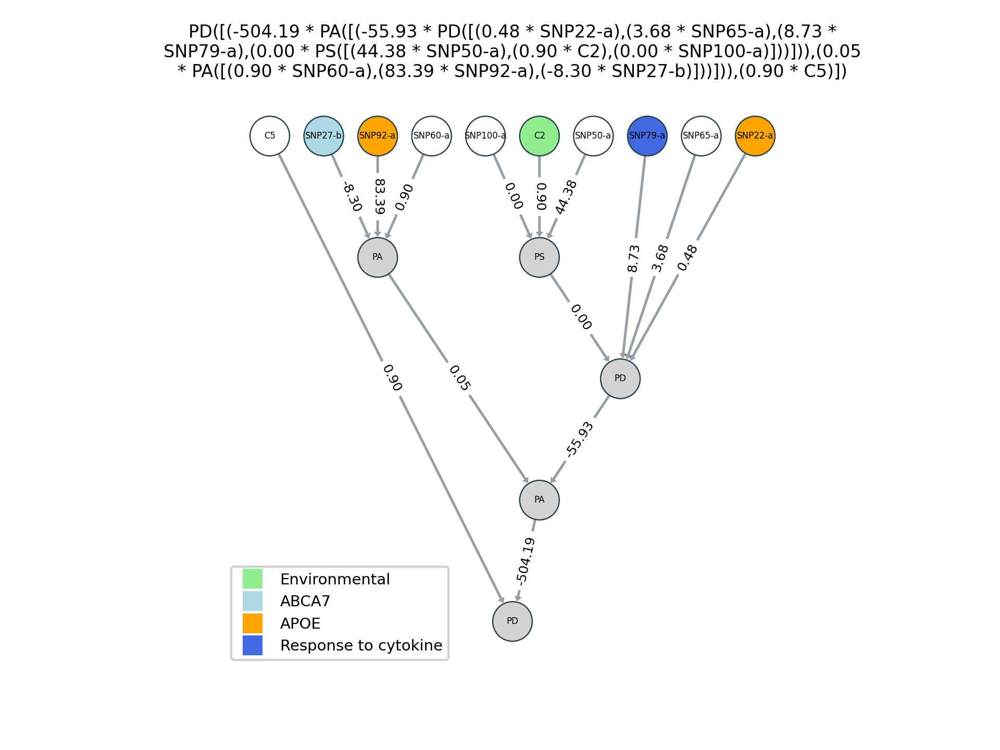

Output Files
ATHENA produces 3 types of files during its run: summary, logs and plots. The files will have the name specified in the --out (OUT) parameter which can include a full path. Each will have an extension added to the base name as described below.
Summary file
ATHENA writes a single summary file for each run it performs. It displays the best network for each cross-validation in the run. The file will have "_summary.txt" appended to the base name specified in the parameters (--out).
The file constists of 3 sections:
cross-validation results
The top portion is a tab delimited table of the results across the cross-validations in the ATHENA run.
CV Variables r-squared Training Testing Training-missing Testing-missing
1 SNP9-a SNP25-b 0.0934 0.087 0.00% 0.00%
2 SNP41-a SNP53-a 0.1237 0.0598 0.00% 0.00%
3 SNP17-a C33 0.0974 0.0345 0.00% 0.00%
4 SNP57-b SNP43-b SNP72-a SNP62-b SNP40-a 0.0337 -0.0503 0.00% 0.00%
5 C48 SNP12-a 0.0874 0.0596 0.00% 0.00%
The columns are:
| CV | cross-validation interval |
| Variables | Variables appearing in the best evolved network for the cross-vaidation |
| [r-squared or balacc] Training | Training fitness for the network |
| [r-squared or balacc] Testing | Testing fitness for the network |
| Training-missing | Percentage of missing data for the network on the testing data |
| Testing-missing | Percentage of missing data for the network on the testing data |
best networks
The second section of the summary file displays the best networks in each cross-validation. These models are simplified by calculating the constant values in the models.
CV Model
1 PD([(3.20 * SNP9-a),(85.16 * SNP25-b)])
2 PM([(0.48 * SNP41-a),(0.60 * SNP53-a)])
3 PM([(0.28 * SNP17-a),(0.93 * C33)])
4 PS([(0.53 * PS([(0.66 * SNP57-b),(0.10 * PD([(24.42 * SNP43-b),(0.56 * SNP72-a)]))])),(0.75 * PM([(-0.47 * SNP62-b),(0.53 * SNP40-a)]))])
5 PS([(0.25 * C48),(-0.26 * SNP12-a)])
original network representation
The final section of the summary file displays the best networks in each cross-validation as originally evolved by ATHENA. These models display the internal representation of the networks during a run.
CV Model
1 PD([((float(8.9) - float(5.7)) * x[16]),(float(85.16) * x[49])])
2 PM([(float(.48) * x[80]),(pdiv(float(0.5),float(.83)) * x[104])])
3 PM([(float(.28) * x[32]),(float(0.93) * x[232])])
4 PS([(float(.53) * PS([(float(0.66) * x[113]),(float(.1) * PD([(float(24.42) * x[85]),(float(.56) * x[142])]))])),(float(.75) * PM([((pdiv(((float(.3) + float(.6)) * pdiv(float(.5),float(.8))),float(4.2)) - float(.6)) * x[123]),(float(.53) * x[78])]))])
5 PS([(float(.25) * x[247]),((float(.89) * (float(.6) - float(.89))) * x[22])])
Log files
The ATHENA log files are tab-delmited files with the ".log" extension. ATHENA writes one file for each cross-validation interval in the run and the cross-validation number is indicate in the filename (i.e. athena.cv1.log). These files can be used to analyze the performance of the algorithm over the course of a run.
The header line identifies each column:
| gen | Generation |
| invalid | Number of invalid individuals in the population |
| avg | Training fitness average for all valid individuals |
| std | Training fitness standard deviation |
| min | Training fitness minimum score |
| max | Training fitness maximum score |
| fitness_test | Testing fitness for best individual (only calculated on last generation) |
| best_ind_length | Genome size for best individdual in population |
| avg_length | Average genome size for all individuals in population |
| best_ind_nodes | Number of mapped nodes in tree for best individual |
| avg_nodes | Average number of mapped nodes in tree for all individuals |
| best_ind_depth | Depth of mapped tree for best individual in population |
| avg_depth | Average depth of mapped trees for all individuals in population |
| avg_used_codons | Average number of codons used in mapping |
| best_ind_used_codons | Number of codons used in mapping best individual |
| structural_diversity | Fraction of individuals producing unique structures |
| selection_time | Time spent in selection process |
| generation_time | Time spent for entire generation |
| best_phenotype | Best network (by trainig score) in this generation |
In the case of a parallelized run, the log files contain the combined values from all the individual populations.
Plot files
ATHENA utilizes the netgraph Python package to generate plots of the best individuals in each cross-validation. The files are in the png format and have filename extensions indicating the cross-validation (i.e. athena.cv1.png). Specific colors can be used to designate the different input variables in the Color Mapping File.
